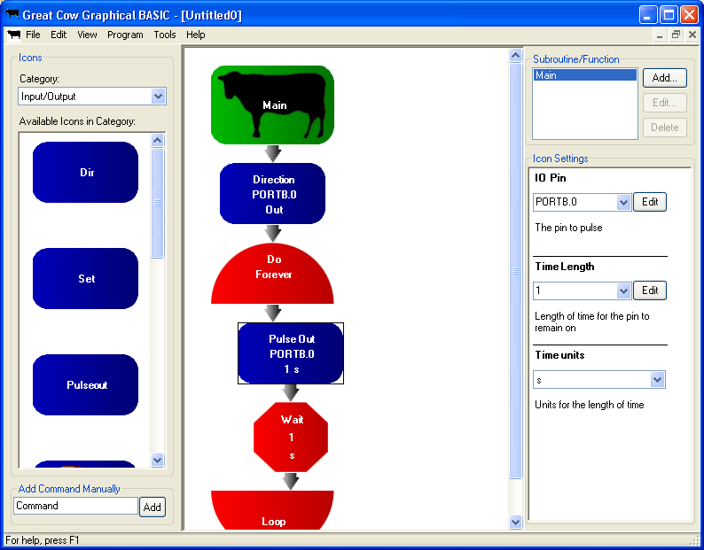

Great Cow Graphical BASIC is tightly integrated with Great Cow BASIC - it will work with all of the same chips, and loads and saves GCBASIC programs directly. You can even copy and paste between Great Cow Graphical BASIC and a text editor with a Great Cow BASIC program in it! GCGB will load GCB libraries, and when you're comfortable to leave the icons behind, your GCGB programs can be edited like any other Great Cow BASIC program.
Currently, Great Cow Graphical BASIC will only run on Windows and requires the .NET Framework 1.1 or higher. It can be made to run with Mono 1.1 if a copy of Microsoft.VisualBasic.dll is provided, but this is only poorly tested and requires additional work.
